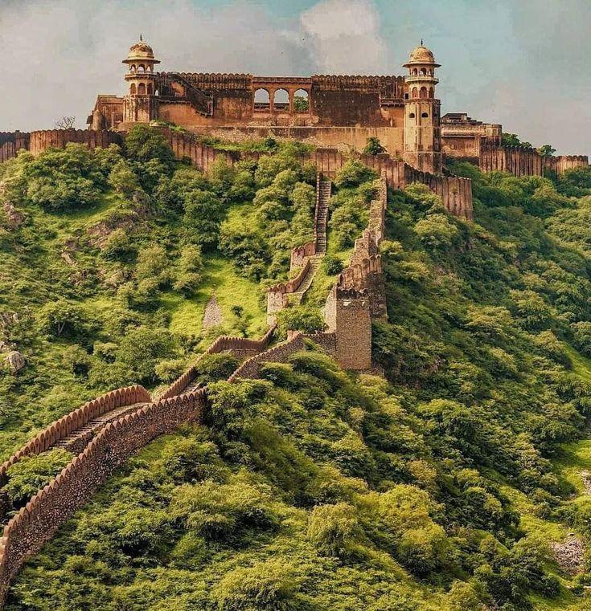
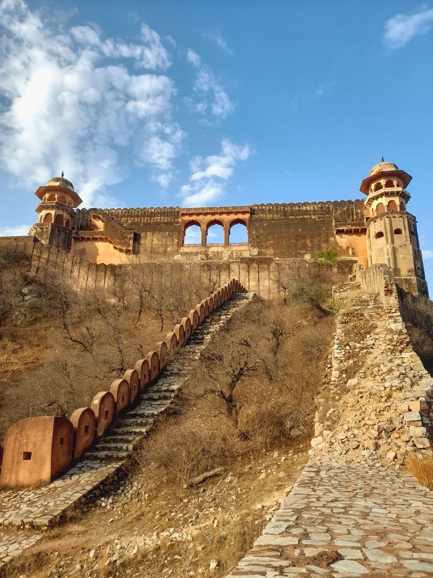
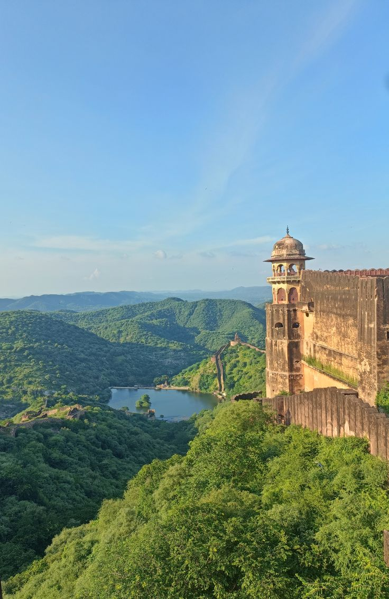

Jaigarh Fort
The fort of victory
- Built
- About 1726
- Built by
- Sawai Jai Singh II
- Purpose
- Protecting Amber
- Style
- Rajput
- Famous for
- The Jaivana cannon
- Best time
- Morning, cooler and quieter

About Jaigarh Fort
Jaigarh stands on the Cheel ka Teela ridge above Amber Fort, and the two are joined by a fortified passage. Its thick red walls and watchtowers made it one of the strongest hill forts in the region.
Its most famous sight is the Jaivana cannon, cast in 1720 at the fort's own foundry and among the largest cannons on wheels in the world. Vast rainwater tanks under the courtyards supplied the garrison in dry seasons.
History
- 1720The Jaivana cannon is cast at the fort foundry.
- About 1726Jai Singh II builds Jaigarh to defend Amber.
- 1970sA widely told story of a treasure search here draws national attention.
- TodayThe fort has a small armoury museum and open courtyards.
Jaigarh Fort through the day

